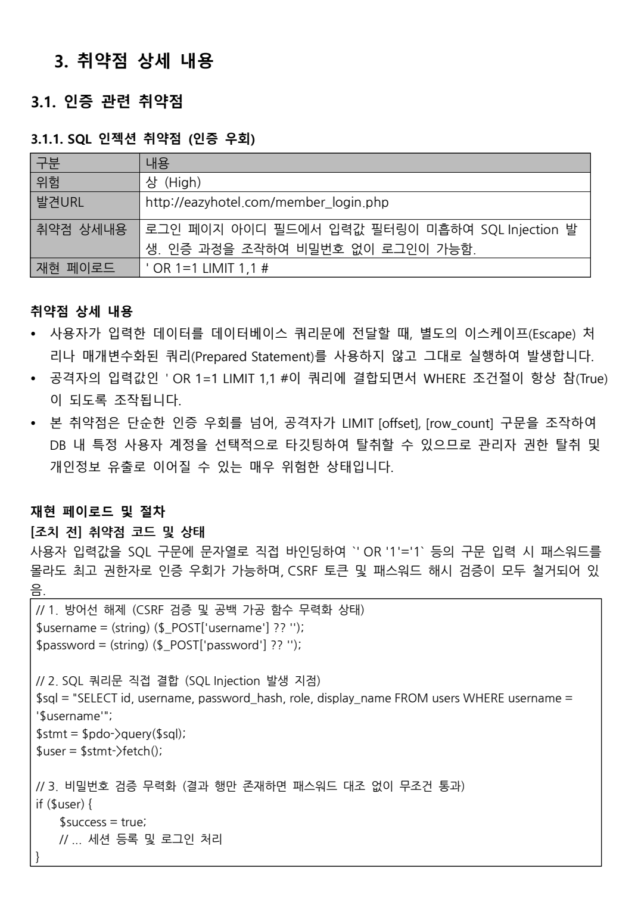
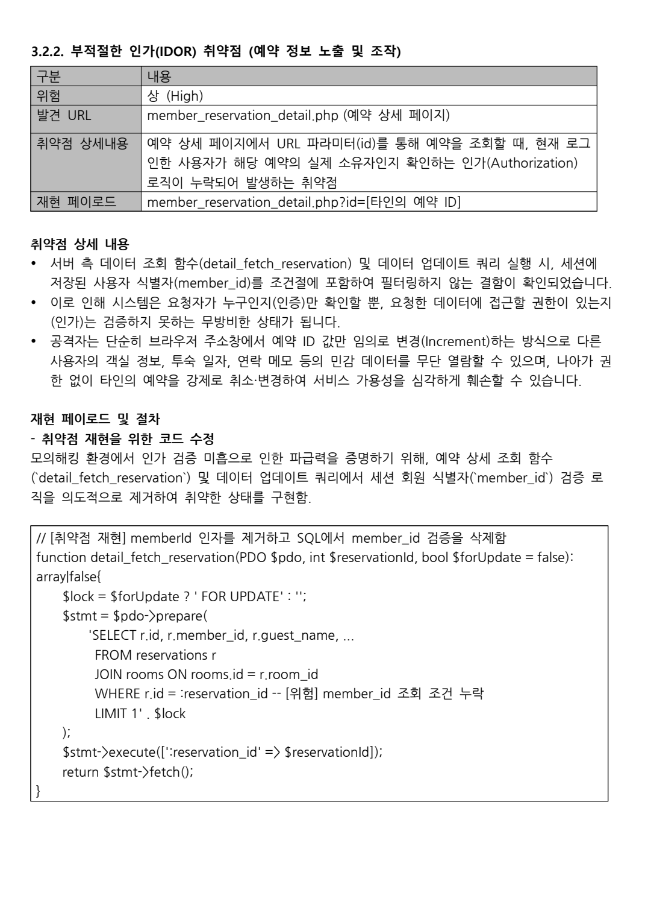

2차 팀 프로젝트 · SECURITY MONITORING
Eazy Hotel
보안 점검과 관제 구축
호텔 예약 서비스를 직접 구성한 뒤 취약점을 재현하고, 조치 전후를 비교했습니다. 동시에 방화벽·IDS/IPS·로그 관제 환경을 연결하고, Ubuntu 서버의 67개 보안 항목을 확인하는 쉘 스크립트를 만들었습니다.
프로젝트명 Hotel Reservation Security Monitoring System(HRSMS)

01 / OVERVIEW
왜 호텔 예약 시스템이었나
호텔 예약 서비스에는 회원 정보, 예약 일정, 연락처처럼 보호해야 할 정보가 들어갑니다. 고객은 외부에서 계속 접속하고 관리자는 내부에서 예약을 처리하므로, 웹 서비스와 내부 관리 환경을 나눠 볼 수 있다는 점도 프로젝트 주제로 적합했습니다.
처음에는 계획서를 제출하고 피드백을 받은 뒤 작업을 시작했습니다. 최종 환경은 외부망, DMZ, 내부 업무망, 보안 관제망으로 구분했습니다. 외부 요청은 pfSense와 Suricata를 거쳐 웹 서버로 들어오고, 각 장비와 서버에서 생긴 로그는 rsyslog와 Graylog, GoAccess에서 확인하도록 연결했습니다.
02 / PROCESS
계획서부터 최종 제출까지
- 01계획서 제출 및 피드백
호텔 예약 시스템, 통합 보안 관제, 쉘 스크립트 자동화를 프로젝트 범위로 정했습니다.
- 02GNS3 네트워크와 서비스 환경 구성
외부망·DMZ·내부망·관제망을 나누고 웹, DB, 방화벽, 관제 도구가 연결될 수 있도록 구성했습니다.
- 03취약점 재현과 보안 조치
웹 코드에 취약한 상태를 만들고 공격 조건을 확인한 뒤, 코드를 수정해 같은 요청이 차단되는지 다시 테스트했습니다.
- 04시스템 점검 스크립트 작성
Ubuntu 환경에서 67개 항목을 순서대로 점검하고 결과를 양호·취약·수동 확인으로 집계하도록 틀을 잡았습니다.
- 05보고서 정리 및 최종 제출
계획서, 모의해킹 결과보고서, 시스템 점검보고서, 쉘 스크립트, 최종 통합보고서를 제출했습니다.
03 / MY ROLE
제가 맡은 부분
GNS3 네트워크 구성
계획 단계에서 전체 토폴로지를 설계하고 각 구간이 연결되도록 네트워크 환경 구성에 참여했습니다.
취약점 분석과 재현
모의해킹을 많이 수행했다기보다, 취약점이 생기는 조건을 분석하고 웹 코드에 취약한 상태를 직접 만든 뒤 실제로 재현되는지 확인했습니다. 조치 후에는 같은 입력이 차단되는지도 다시 봤습니다.
모의해킹 결과보고서 작성
SQL Injection, Open Redirection, Session Fixation, Stored XSS, IDOR, SSRF의 원인과 재현 절차, 조치 코드, 재시험 결과를 보고서 형식으로 정리했습니다.
보안 점검 스크립트 틀 작성
67개 점검 함수가 같은 형식으로 결과를 출력하도록 공통 함수와 집계 방식을 만들었습니다. 전체 항목과 취약 항목만 따로 볼 수 있도록 실행 모드도 나눴습니다.
cron 실시간 출력 방식 제안
정해진 시간에 스크립트를 실행하면서 결과를 현재 Ubuntu 터미널에 바로 띄우는 방식을 제안하고 직접 테스트했습니다. 시연까지 했지만 최종 운영 방식으로는 채택되지 않았습니다.
04 / PENTEST
취약점을 만든 뒤 다시 막아 본 과정
진단 대상은 Eazy Hotel 웹 서비스였습니다. 인증, 회원 관리, 시스템 접근 세 영역에서 6개 취약점을 정리했습니다. 각 항목은 취약한 코드, 공격 입력값, 재현 화면, 수정 코드, 조치 후 결과 순서로 작성했습니다.
- 인증·세션: SQL Injection, Open Redirection, Session Fixation
- 회원 정보·인가: Stored XSS, IDOR
- 시스템 접근: SSRF

05 / CASES
보고서에 정리한 대표 사례
비밀번호 없이 다른 계정으로 로그인
로그인 쿼리에 입력값이 그대로 들어가도록 취약한 상태를 만들고, LIMIT 값을 바꿔 특정 사용자 계정으로 인증이 우회되는지 확인했습니다. 이후 Prepared Statement와 password_verify()를 적용하고 같은 페이로드가 차단되는지 재시험했습니다.
예약 번호 변경으로 타인의 예약 조회
예약 상세 조회 조건에서 로그인 사용자의 member_id 검증을 제거해 취약한 상태를 재현했습니다. URL의 예약 ID만 바꿔 다른 사람의 예약을 보거나 취소할 수 있는지 확인한 뒤, 조회와 수정 쿼리에 소유자 조건을 다시 넣었습니다.
웹 서버를 이용한 내부 자원 요청
partner-url 값을 검증하지 않는 상태에서 file:// 스키마와 내부 주소 요청을 시험했습니다. 수정 후에는 http·https만 허용하고, 루프백과 내부망 주소 및 허용되지 않은 도메인을 차단했습니다.


06 / SHELL SCRIPT
67개 항목을 같은 방식으로 점검하도록
점검 기준은 KISA 주요정보통신기반시설 취약점 분석·평가 가이드를 참고했습니다. 각 항목을 U_01부터 U_67까지 함수로 나누고, 공통 출력 함수에서 전체·양호·취약·수동 확인 개수를 집계하도록 구성했습니다.
항목 코드, 점검 내용, 결과, 필요한 조치사항을 같은 형식으로 출력했습니다.
all은 전체 항목을, vulnerable은 취약한 항목만 확인하도록 했습니다.
wheel 대신 sudo 그룹을 확인하는 등 실제 실습 환경에 맞게 일부 점검 기준을 조정했습니다.
처음 발견된 9개 취약 항목을 조치한 뒤 67개 항목이 모두 양호로 표시되는 것을 확인했습니다.


07 / PROPOSAL
채택되지는 않았지만 직접 테스트한 방식
cron으로 정해진 시간에 점검 스크립트를 실행하고 결과를 로그 파일로 남기는 방식은 보고서에 포함했습니다. 여기에 한 가지를 더 제안했습니다. 관리자가 로그 명령어를 따로 입력하지 않아도 현재 열려 있는 Ubuntu 터미널에 점검 결과가 바로 나타나게 하는 방식이었습니다.
시간을 지정할 수 있고 결과를 바로 볼 수 있다는 점이 편리하다고 생각해 직접 설정하고 영상으로 남겼습니다. 다만 최종 프로젝트에서는 이 실시간 터미널 출력 방식이 채택되지 않았습니다. 아래 영상은 당시 제안 방식을 확인하기 위해 만든 테스트 기록입니다.
테스트 영상 보기 ↓
08 / RESULT
2차 프로젝트 우수상
프로젝트 평가에서 1위를 해 팀원들과 함께 우수상을 받았습니다. 네트워크, 웹 서비스, 보안 솔루션, 로그 관제, 취약점 점검 결과가 하나의 흐름으로 연결됐다는 점이 좋은 평가를 받았습니다.
09 / DELIVERABLES
제출 자료와 테스트 영상
계획서부터 최종보고서까지 제출 순서대로 정리했습니다. 모의해킹 결과보고서와 시스템 점검 스크립트는 제가 맡은 작업을 확인할 수 있는 핵심 자료입니다.
CRON · TERMINAL OUTPUT TEST
영상 파일 열기 ↗
점검 결과 실시간 출력 테스트
정해진 시간에 스크립트가 실행되고, 활성화된 Ubuntu 터미널에 결과가 표시되는지 확인한 영상입니다.
10 / REVIEW
프로젝트를 마치고
1차 프로젝트에서는 네트워크 설정과 ACL에 집중했다면, 2차에서는 웹 취약점과 시스템 점검까지 범위가 넓어졌습니다. 이미 안전하게 만들어진 기능을 보는 것보다 취약한 조건을 직접 만들고 공격이 되는 이유를 확인한 뒤 다시 막아 보는 과정이 이해에 도움이 됐습니다.
점검 스크립트는 여러 사람이 항목을 나눠 작성하더라도 출력 형식이 달라지지 않게 틀을 먼저 잡는 것이 중요했습니다. 자동화 아이디어가 최종 방식으로 사용되지는 않았지만, 필요한 기능을 생각하고 실제 화면에서 동작하는지 시험해 본 경험으로 남았습니다.